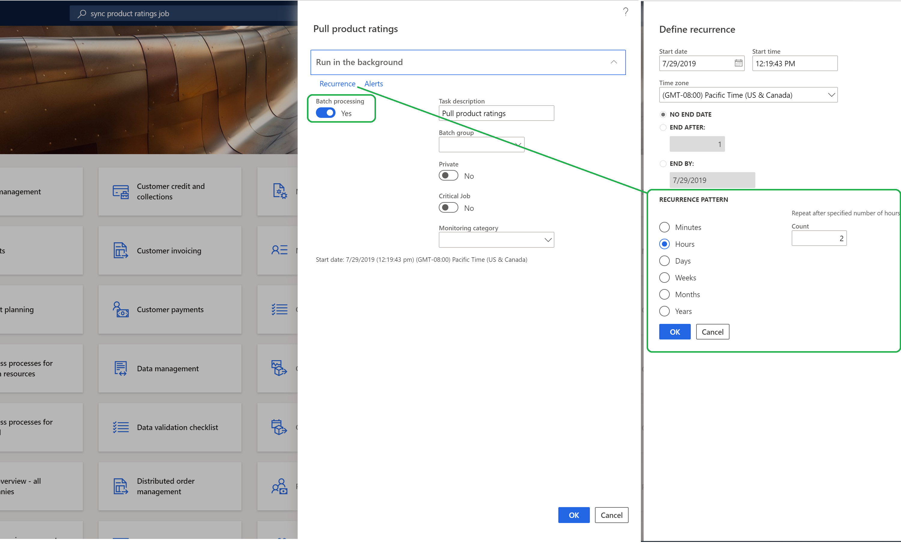
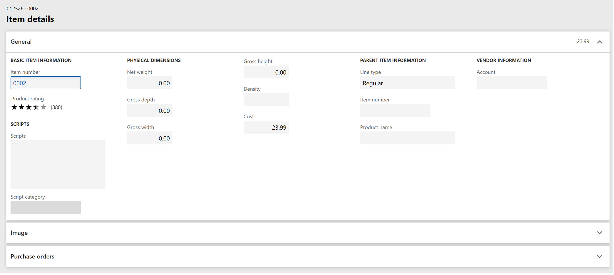

Synchronisieren von Produktbewertungen in Dynamics 365 Commerce
Important
Dynamics 365 Retail ist jetzt Dynamics 365 Commerce und bietet umfassende Handelsfunktionen für alle Kanäle – von E-Commerce über Shops bis hin zu Callcentern. Weitere Informationen zu diesen Änderungen finden Sie unter Microsoft Dynamics 365 Commerce.
In diesem Thema wird das Synchronisieren von Produktbewertungen in Microsoft Dynamics 365 Commerce beschrieben.
Übersicht
Um Produktbewertungen in Mehrkanal-Lösungen, z. B. am Point of Sale (POS) und in Callcentern, zu verwenden, müssen die Produktbewertungen aus dem Dienst Bewertungen und Überprüfungen in die Commerce-Kanaldatenbank importiert werden. Wenn Produktbewertungen in Mehrkanal-Lösungen zur Verfügung gestellt werden, können sie Kunden indirekt bei ihren Interaktionen mit Vertriebspartnern unterstützen.
In diesem Thema werden folgende Aufgaben beschrieben:
- Konfigurieren Sie Produktbewertungsjob synchronisieren als Batchauftrag zum Synchronisieren von Produktbewertungen aus dem Bewertungs- und Überprüfungsservice.
- Sicherstellen, dass der Batchauftrag für die Produktbewertungssynchronisierung erfolgreich war
- Bereitstellen von Produktbewertungen am POS
Konfigurieren eines Batchauftrags zum Synchronisieren von Produktbewertungen
Important
Vor dem Start sicherstellen, dass Version 10.0.6 oder höher von Dynamics 365 Commerce Retail installiert ist.
Commerce-Planer initialisieren
Um den Commerce-Planer zu initialisieren, führen Sie die folgenden Schritte aus:
- Gehen Sie zu Retail und Commerce > Zentralverwaltungseinrichtung > Commerce-Planer > Commerce-Planer initialisieren. Suchen Sie alternativ nach „Commerce-Planer initialisieren“.
- Stellen Sie im Dialogfeld Commerce-Planer initialisieren sicher, dass die Option Vorhandene Konfiguration löschen auf Nein gesetzt ist, und wählen Sie dann OK aus.
Den Unterauftrag RetailProductRating prüfen
Um sicherzustellen, dass der Unterauftrag RetailProductRating vorhanden ist, befolgen Sie diese Schritte.
- Gehen Sie zu Retail und Commerce > Zentralverwaltungseinrichtung > Commerce-Planer > Planer-Unteraufträge. Suchen Sie alternativ nach „Steuerprogrammunteraufträge“.
- Finden oder suchen Sie in der Unterauftragsliste den Unterauftrag RetailProductRating.
Die folgende Abbildung zeigt ein Beispiel der Seite Unterauftragsdetails in Commerce.

Note
Wenn Sie den Unterauftrag RetailProductRating nicht finden, haben Sie vielleicht den Auftrag Synchronisieren von Produktbewertungen und den Auftrag 1040 CDX ausgeführt, bevor Sie den Commerce-Planer initialisiert haben. Befolgen Sie in diesem Fall die Schritte, um den Auftrag Vollständige Datensynchronisierung auszuführen.
- Gehen Sie zu Retail und Commerce > Zentralverwaltungseinrichtung > Commerce-Planer > Kanaldatenbank. Suchen Sie alternativ nach „Kanaldatenbank“.
- Wählen Sie die zu synchronisierende Kanaldatenbank aus.
- Wählen Sie Vollständige Datensynchronisierung im Aktivitätsbereich aus.
- Wählen Sie im Dropdown-Dialogfeld Vertriebsplan auswählen die Option 1040 - Produkte und dann OK aus.
- Wiederholen Sie die Schritte der vorherigen Prozedur, um zu prüfen, ob der Unterauftrag RetailProductRating erstellt wurde.
Produktbewertungen importieren
Führen Sie die folgenden Schritte aus, um Produktbewertungen aus dem Bewertungs- und Überprüfungsdienst in Commerce zu importieren.
- Navigieren Sie zu Retail und Commerce > Zentralverwaltungseinrichtung > Commerce-Planer > Produktbewertungsauftrag synchronisieren. Suchen Sie alternativ nach „Produktbewertungsauftrag synchronisieren“.
- Wählen Sie im Dialogfeld Produktbewertungen auf dem Inforegister Im Hintergrund ausführen die Option Wiederholung aus.
- Legen Sie im Dialogfeld Wiederholung definieren ein Wiederholungsmuster fest. (Der empfohlene Wert beträgt zwei Stunden.) Planen Sie keine Wiederholung, die kürzer als eine Stunde ist.
- Wählen Sie OK.
- Legen Sie die Option Stapelverarbeitungsvorgang auf Ja fest. Diese Einstellung stellt sicher, dass Sie die Protokolle überwachen und den Status von Batchaufträgen überprüfen können.
- Wählen Sie OK aus, um den Batchauftrag zu planen.
Die folgende Abbildung zeigt ein Beispiel der Batchauftragskonfiguration in Commerce.

Sicherstellen, dass der Batchauftrag für die Produktbewertungssynchronisierung erfolgreich war
Um sicherzustellen, dass der Batchauftrag Produktbewertungen synchronisieren erfolgreich war, befolgen Sie diese Schritte.
- Navigieren Sie zu Retail und Commerce > Systemadministrator > Abfragen > Batchaufträge oder bei Verwendung einer Commerce-Lagermengeneinheit stattdessen zu Retail und Commerce > Abfragen und Berichte > Batchaufträge. Suchen Sie alternativ nach „Batchaufträge“.
- Um die Details des Batchauftrags in der Batchauftragsliste anzuzeigen, suchen Sie in der Spalte Auftragsbeschreibung nach einer Beschreibung mit „Produktbewertungen abrufen“.
- Wählen Sie die Auftrags-ID aus, um die Details des Batchauftrags anzuzeigen, z. B. das geplante Startdatum/die geplante Startzeit und den Wiederholungstext.
Die folgende Abbildung zeigt ein Beispiel für die Batchauftragsdetails in Commerce, wenn die Ausführung des Batchauftrags in zweistündigen Intervallen geplant ist.

Bereitstellen von Produktbewertungen am POS
Die Bewertungs- und Prüfungslösung in Dynamics 365 Commerce ist eine Mehrkanallösung. Produktbewertungen werden jedoch standardmäßig nicht am POS angezeigt. Damit Kunden in Geschäften Bewertungen und Beurteilungen sehen können, wenn sie von Vertriebspartnern unterstützt werden, müssen Sie die Produktbewertungen am POS aktivieren.
Gehen Sie folgendermaßen vor, um Produktbewertungen am POS zu aktivieren.
- Gehen Sie zu Retail und Commerce > Commerce-Einrichtung > Parameter > Commerce-Parameter. Suchen Sie alternativ nach „Commerce-Parametern“.
- Wählen Sie auf der Registerkarte Konfigurationsparameter die Option Neu aus.
- Geben Sie einen Namen, wie RatingsAndReviews.EnableProductRatingsForRetailStores, ein, und setzen Sie den Wert auf true.
- Wählen Sie Speichern.
- Gehen Sie zu Retail und Commerce > Retail und Commerce IT > Vertriebsplan. Suchen Sie alternativ nach „Vertriebsplan“.
- Wählen Sie in der Auftragsliste 1110 (globale Konfiguration) und dann Jetzt ausführen aus.
- Überprüfen Sie nach erfolgreicher Ausführung des Auftrags, ob die Produktbewertungen jetzt am POS angezeigt werden.
Die folgende Abbildung zeigt ein Beispiel für die Konfiguration der Commerce-Parameter zum Aktivieren der Produktbewertungen am POS.

Die folgende Abbildung zeigt ein Beispiel für Produktbewertungen am POS.
Die folgende Abbildung zeigt ein Beispiel für Produktbewertungen in Callcenter-Kanälen.

Zusätzliche Ressourcen
Überblick über Bewertungen und Prüfungen
Abonnieren zum Verwenden von Bewertungen und Prüfungen